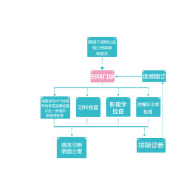

大家来“找茬”之宫颈癌诊断面面观
相信很多人都玩过大家来找茬的游戏吧？在神似的场景中寻找其中极其细微的差别，考验耐力也考验缜密鉴别力。其实，很多疾病（比如宫颈癌）的诊断，与找茬游戏有着异曲同工之妙哦。对于早期没有明显症状显现的宫颈癌，该如何进行诊断呢？今天，我就来为大家科普下，医生们是如何运用缜密的检测手段、面面俱到发现宫颈癌、诊断宫颈癌的。
首先，来给大家看一下宫颈癌的诊断流程。

从上面的流程图中可以看出，面对来势汹汹的宫颈癌，我们严阵以待，不给宫颈癌以可乘之机。那这些检查手段各自有哪些功能、它们之间又有着哪些不同？接下来就为大家详细解析下。
妇科检查
包括视诊和触诊两种。
1）视诊 应在充足照明条件下进行，直接观察外阴和通过阴道窥器观察阴道及宫颈。除一般观察外应注意癌浸润范围，宫颈肿瘤的位置、范围、形状、体积及与周围组织的关系。
2）触诊 肿瘤的质地、浸润范围及其与周围的关系等必须通过触诊确定。有些黏膜下及颈管内浸润，触诊比视诊更准确。三合诊检查（即经直肠、阴道、腹部联合检查）可了解阴道旁、宫颈旁及子宫旁有无浸润，肿瘤与盆壁关系，子宫骶骨韧带、子宫直肠窝、直肠本身及周围情况等。
细胞学检查
宫颈细胞学检查包括传统的巴氏涂片（即人们常说的宫颈涂片）和液基薄层细胞学检查（TCT）等。TCT较巴氏涂片有更高的敏感性和准确性；巴氏涂片操作简便，费用较低，但目前应用较少。
阴道镜检查
对发现宫颈癌前病变、早期宫颈癌、确定病变部位有重要作用，可提高活检的阳性率。在不具备阴道镜的医疗单位，也可以应用3%或5% 醋酸后或碘溶液涂抹宫颈后肉眼观察，在有醋白上皮或碘不着色处取活检，送病理检查。阴道镜活检的同时应注意宫颈管搔刮术的重要性，当不能除外颈管有更严重病变或腺性病变时，可酌情行颈管搔刮术。
影像学检查
由于解剖部位表浅，绝大多数宫颈癌经妇科检查及细胞病理学检查即可被确诊。在宫颈癌诊断中影像学检查的价值主要是对肿瘤转移、侵犯范围和程度的了解（包括评价肿瘤局部侵犯的范围，淋巴结转移及远处器官转移等），以指导临床决策并用于疗效评价。
肿瘤标志物检查
肿瘤标志物异常升高可以协助诊断、疗效评价、病情监测和治疗后的随访监测，尤其在随访监测中具有重要作用。
讲了这么多，相信大家对宫颈癌的诊断方法也有了一定的了解。But！不要觉得有了面面俱到的诊断方法就可以放松警惕了，还是要及早预防，让宫颈癌无机可乘！
Ref
中华人民共和国国家卫生和计划生育委员会。宫颈癌及癌前病变规范化诊疗指南（试行）。中国医学前沿杂志（电子版），2013，5(8): 37-46.
了解更多有关巴氏涂片和TCT详情，Link到第24期宫颈癌筛查中的细胞学检查内容